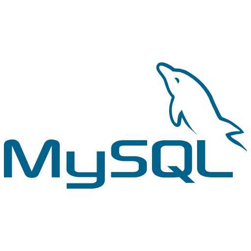
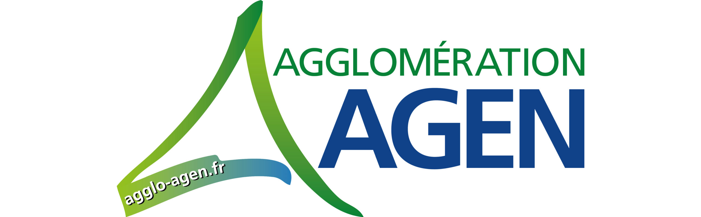
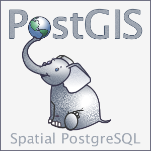
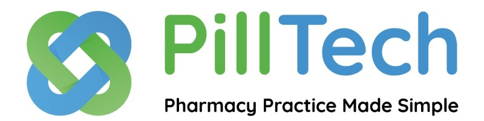
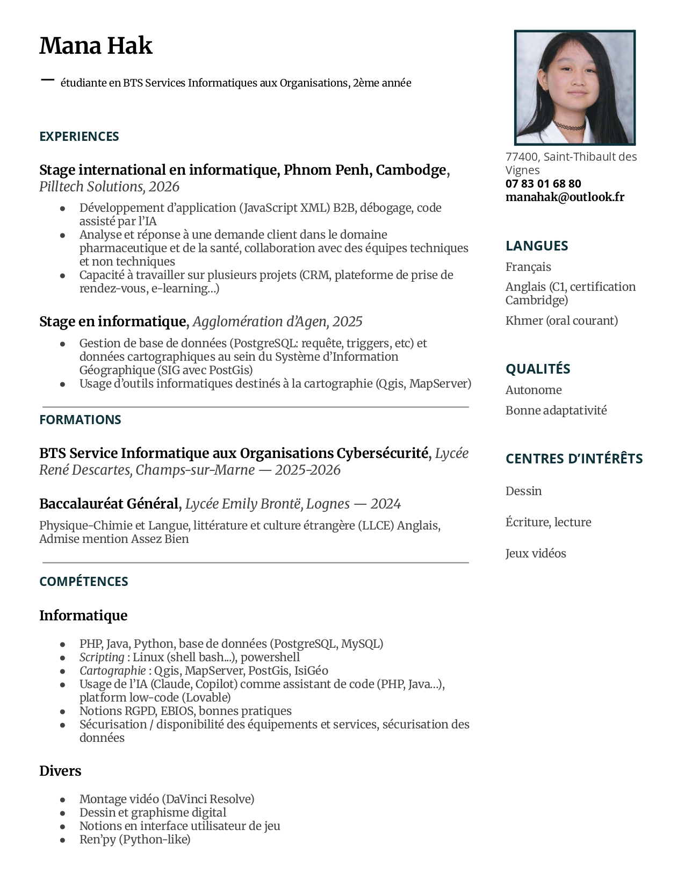

Bienvenue sur mon portfolio_
Bienvenue sur mon portfolio_
Passionnée par le développement informatique, j'étudie actuellement en deuxième année de BTS SIO option SLAM en région parisienne.
Les différents projets menés en cours et en stage m'ont permis d'apprécier la partie technique de la programmation et des langages, la dimension utilisateurs et rendu métier ainsi que la rigueur du débuggage.
Aujourd'hui je souhaiterai me spécialiser dans le développement UI/UX.
Compétences
Base de données
 PostgreSQL, Postgis |
Logiciel Java
|
Web
|
|---|
|
|
|
|
|---|---|---|
|
|
|---|

Français, Anglais (C1, certification Cambridge), Khmer (oral courant)
Parcours
Formation
BTS SIO option SLAM
2024 - 2026Lycée René Descartes, Champs-sur-Marne
BAC général (LLCE Anglais, Physique-Chimie)
2021 - 2024Lycée Emily Brontë, Lognes
Expériences Professionnelles
Stage 2ème année
Janvier - Mars 2026Stage à l'étranger (Cambodge) auprès de Pilltech Solutions.
Stage 1ère année
Juin 2025Stage auprès du service informatique de la collectivité d'Agen.
Expériences
Se trouve ci-dessous mes diférents travaux et expériences.
Stage BTS 1ère année
Agglomération d'Agen, France
Stage BTS 2ème année
Pilltech Solutions, Cambodge
Qui est-ce?
PHP - algorithme de détection d'erreurs
Jeu détective
Python Programmation orientée objet - système d'inventaire
Réservation de boxes karaoké
Python-Flask - back office, site vitrine de réservation
Jeu détective
Je développe quelques fois dans mon temps libre du programme, notamment en Ren'py (dérivé de Python), et Python lui-même.
Avec de la programmation orientée objet, j'ai réussi à coder un système d'inventaire pour un jeu détective. L'inventaire sert au joueur à stocker des items numériques dans le contexte du jeu; ici, il permet de faire une liste de toutes les preuves et les indices qui aideront à la résolution d'une enquête détective.

Les attributs définis servent à identifier l'item (l'indice) et son utilité, mais ont aussi été adaptés pour l'interface graphique, dont je me suis également occupée entièrement (code, contenu, interface graphique).
J'ai plusieurs fois contribué à des projets en tant que UI artist et développeur dans les prjets d'autrui.


Stage de première année

Pour mon stage de première année de BTS, je suis parti jusqu'à Agen dans le sud de la France et est resté auprès de l'unité gérant le SIG principalement. J'ai travaillé sur la base de données de l'agglomération, et a également découvert des outils cartographiques et géomatiques. La création de cartes se basent sur la base de données, les informations géographiques y étant stockés grâce à Postgis (qui est une extension spécialisée de Postgre).


J'ai moi-même pu créer des cartes répondant à des demandes spécifiques avec Qgis!

- Gestion de base de données (requête, triggers, etc) et données cartographiques au sein du Système d'Information Géographique (SIG, avec PostGis)
- Usage d'outils informatiques destinés à la cartographie (Qgis, MapServer)
- Préparation et mise à disposition de matériel
- Collaboration en équipe sur des projets
Stage de deuxième année

Pour mon stage de deuxième année de BTS, j'ai voyagé jusqu'au Cambodge et a travaillé auprès de Pilltech Solutions pour deux mois. J'ai eu la tâche d'implémenter et corriger des fonctionnalités en utilisant la plateforme low/no-code, sur laquelle de nombreuses applications de l'entreprise sont prises en charge. En plus de l'aspect technique, ce stage m'a permis d'apprendre ce qu'est travailler en entreprise, ainsi que l'importance du travail de groupe. J'ai pu y pratiquer non seulement mon Anglais professionel, mais aussi mon Khmer oral.


J'ai notamment travaillé sur la plateforme de e-learning gérée par l'entreprise. Les collègues concernés me communiquaient les bugs et fonctionnalités qu'ils souhaitaient voir sur la plateforme, et je répondais à ces demandes. Beaucoup de travail d'équipe.
On m'a délégué la maintenance de plusieurs applications hébergés sur la plateforme de low-code utilisée par l'entreprise. C'était une tâche initialement gérée par le PDG lui-même avant mon arrivée!
- Travail en environnement international (stage sur site à Phnom Penh)
- Adaptabilité et autonomie dans un contexte professionnel à l’étranger
- Résolution de bugs et amélioration continue d’applications existantes
- Compréhension des besoins internes et implémentation de fonctionnalités adaptées
- Collaboration avec des équipes techniques et non techniques
- Capacité à travailler sur plusieurs projets (CRM, plateforme de prise de rendez-vous, e-learning)
- Utilisation d’outils d’IA en support au développement
Qui est-ce?
-
Le but de ce projet ? Réaliser un code PHP permettant de répondre à diverses questions, et l'algorithme devinera à quel personnage l'utilisateur fait référence.
La particularité de ce programme est l'inclusion d'un système (léger) de correction d'erreur. L'utilisateur a l'option de mentir une fois à l'une des questions, et l'algorithme réussira tout de même à trouver la bonne réponse.


Qui est-ce?
-
Le but de ce projet ? Réaliser un code PHP permettant de répondre à diverses questions, et l'algorithme devinera à quel personnage l'utilisateur fait référence.
La particularité de ce programme est l'inclusion d'un système (léger) de correction d'erreur. L'utilisateur a l'option de mentir une fois à l'une des questions, et l'algorithme réussira tout de même à trouver la bonne réponse.
Réservation de boxes karaoké
J'ai travaillé sur ce projet dans le but de le présenter mon examen de BTS. C'est un site vitrine pour un établissement de karaoké fictionel, intitulé Karastar.

 Il est possible avec cette application de réserver un boxe de karaoké (choix de la date ainsi que du créneau), avec la possibilité de laisser une note facultative pour prévenir l'établissement d'un détail quelconque. Une fois un créneau réservé, il n'est évidemment plus possible pour d'autres utilisateurs de la saisir.
Il est possible avec cette application de réserver un boxe de karaoké (choix de la date ainsi que du créneau), avec la possibilité de laisser une note facultative pour prévenir l'établissement d'un détail quelconque. Une fois un créneau réservé, il n'est évidemment plus possible pour d'autres utilisateurs de la saisir.
Il existe aussi une page de gestion de compte pour chaque utilisateur: possibilité de changer les informations du compte, ainsi que de gérer ses propres réservations. Du côté back-office, un admin a accès à une page où ce dernier peut gérer la base de données (CRUD) depuis l'application directement.


Veille Technologique
L'IA dans l'imagerie médicale
L'imagerie médicale regroupe les moyens d'acquisition et de restitution d'images du corps humain à partir de différents phénomènes physiques tels que l'absorption des rayons X, la résonance magnétique nucléaire, la réflexion d'ondes ultrasons ou la radioactivité auxquels on associe parfois les techniques d'imagerie optique comme l'endoscopie.
Radiology AI makes consistent diagnoses using 3D images from different health centres
(...) a 3D vision–language model called Merlin (...) demonstrated stronger off-the-shelf performance than did other vision–language models across three hospital sites (...).
04/03/26
AI trained to detect fractures in horses opens door to preventing catastrophic injuries
An artificial intelligence (AI) system that can detect and pinpoint fractures in horses has been nominated for a top award.
09/03/26
A new paradigm for medical AI: why disagreement between models may be more valuable than consensus
Researchers at Karolinska Institutet propose MEDLEY, a conceptual paradigm that challenges the dominant approach of building ever-larger single AI models.
09/03/26
Conséquences environnementales de l'IA générative
L'intelligence artificielle générative ou IA générative est un type de système d'intelligence artificielle capable de générer du texte, des images, des vidéos ou d'autres médias en réponse à des requêtes.
Does saying “please” to ChatGPT really waste energy?
Cut the words ‘please’ and ‘thank you’ from your next ChatGPT request and, if you believe some corners of the internet, you might think you’re helping the planet.
06/03/26
Big Tech companies say AI will help solve climate change. Environmental groups call that 'greenwashing'
AI giants including Google and Microsoft have sometimes touted climate benefits that aren’t backed up by academic evidence, a new report says.
18/02/26
Siemens: How Industrial AI Drives Sustainability in Energy
Siemens’ report reveals how AI is delivering energy savings and carbon reductions as organisations aim for net zero targets
02/12/25
CV
Retrouvez ci-dessous mon CV.

Contact
Adresse email : manahak@outlook.fr